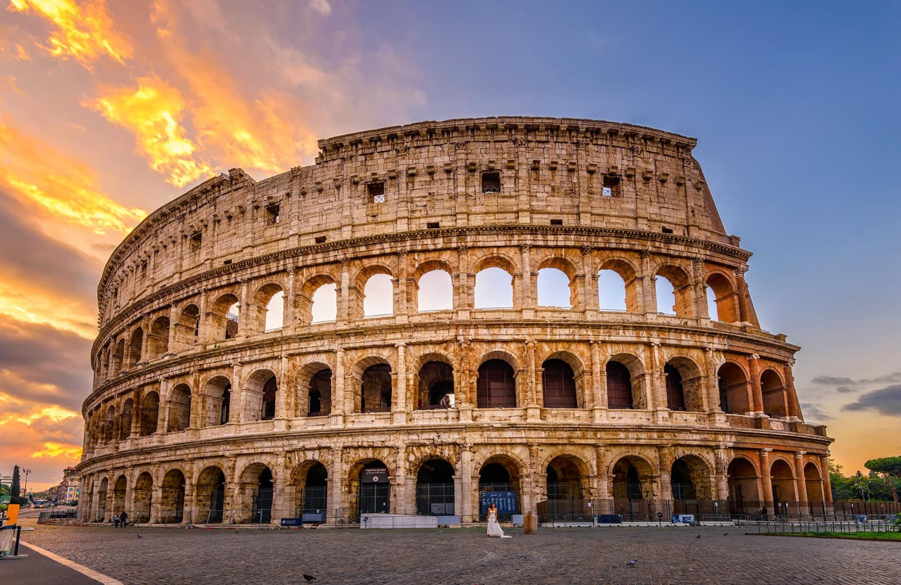
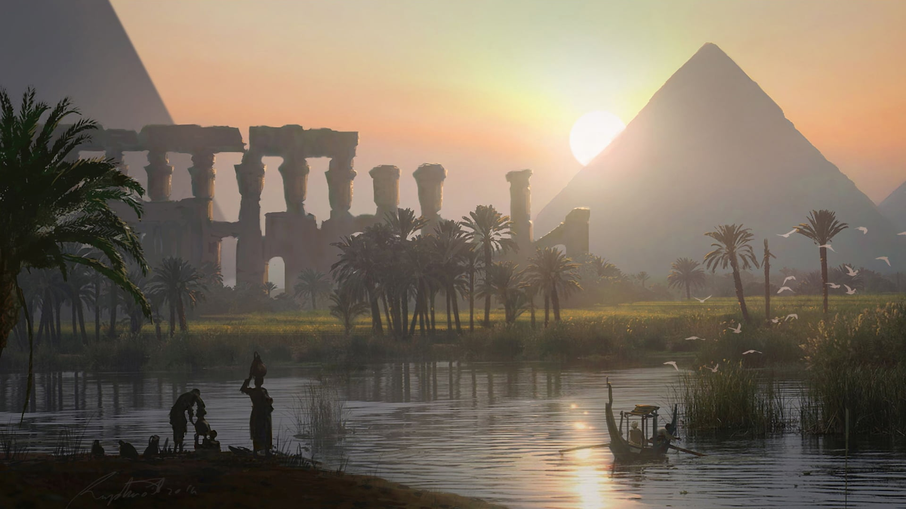
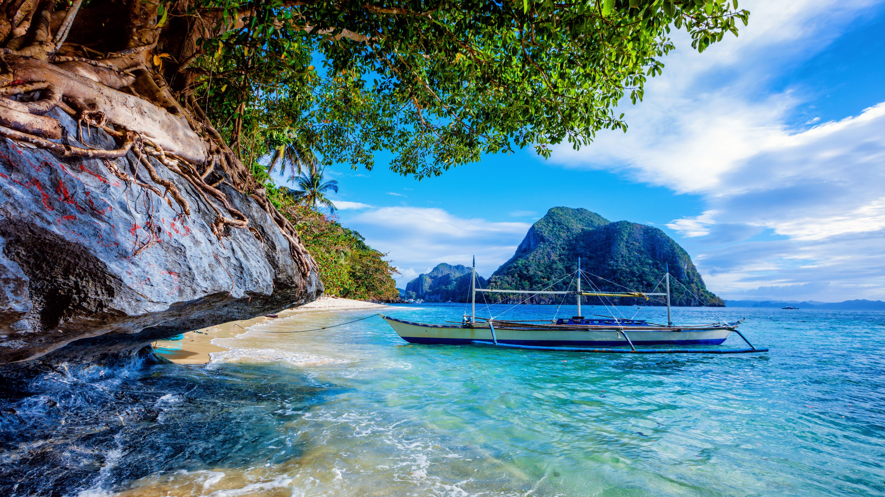
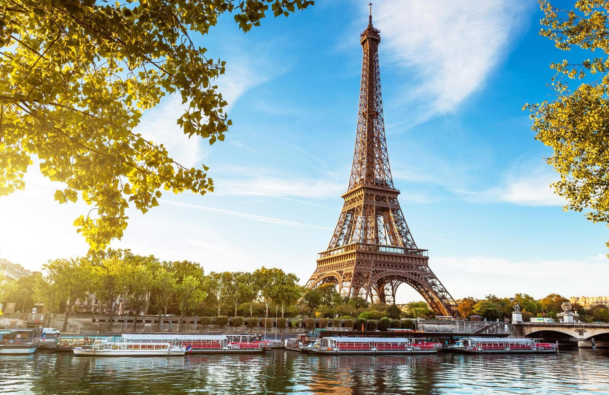
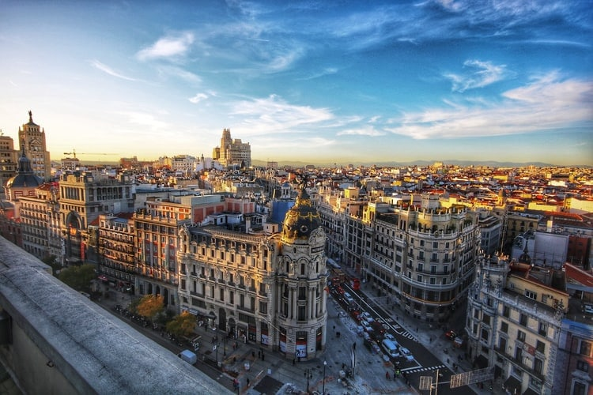
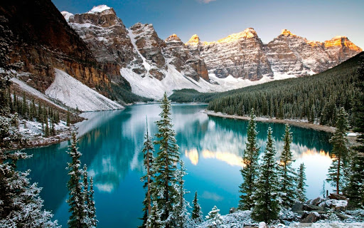

1278$ Sydney, AustraliaAustralia, the smallest continent and one of the largest countries on Earth, lying between the Pacific and Indian oceans in the Southern Hemisphere. Australia’s capital is Canberra, located in the southeast between the larger and more important economic and cultural centres of Sydney and Melbourne. Sydney 6 Days 5 Nights |

350$ Brasov, RomaniaBrașov is a city in Romania. Brașov is located in the central part of the country, about 166(103 miles) kilometres north of Bucharest and 380(236 miles) kilometres from the Black Sea. It is surrounded by the Southern Carpathians and is part of the historical region of Transylvania. Brasov 4 Days 4 Nights |

899$ Rome, ItalyRome is the capital city of Italy. The city has been a major human settlement for over two millennia. With 2,844,395 residents in 1,285 km2. It is the third most populous city in the European Union by population within city limits. Rome is located in the central-western portion of the Italian Peninsula Rome 5 Days 5 Nights |

1200$ Machu Picchu, PeruMachu Picchu is a 15th-century Inca citadel, located in the Eastern Cordillera of southern Peru. The Urubamba River flows past it, cutting through the Cordillera and creating a canyon with a tropical mountain climate. Most archaeologists believe that Machu Picchu was constructed for the Inca emperor, Pachacuti. Machu Picchu 4 4 |

1500$ Cairo, EgyptEgypt, country located in the northeastern corner of Africa. Egypt’s heartland, the Nile River valley and delta, was the home of one of the principal civilizations of the ancient Middle East and, like Mesopotamia farther east, was the site of one of the world’s earliest urban and literate societies. Cairo 7 Days 7 Nights |

1324$ Manila, PhilippinesManila, capital and chief city of the Philippines. The city is the centre of the country’s economic, political, social, and cultural activity. It is located on the island of Luzon and spreads along the eastern shore of Manila Bay at the mouth of the Pasig River.The city’s name was originally Maynilad Manila 7 Days 7 Nights |
|

986$ Paris, FranceParis, the capital of France, situated in the north-central part of the country. People were living on the site of the present-day city, located along the Seine River some 233 miles (375 km) upstream from the river’s mouth on the English Channel. The modern city has spread from the island (the Île de la Cité) and far beyond both banks of the Seine. Paris 6 Days 5 Nights |

1025$ Madrid, SpainMadrid, city, capital of Spain and of Madrid provincia (province). Spain’s arts and financial centre, the city proper and province form a comunidad autónoma (autonomous community) in central Spain. Madrid’s status as the national capital reflects the centralizing policy of the 16th-century Spanish king Philip II and his successors. Madrid 5 Days 5 Nights |

1250$ Ottawa, CanadaOttawa is Canada’s capital. Located in Ontario at the Quebec border, it’s a place where you’ll hear English and French spoken in the streets; where you can discover Canada’s proud heritage at impressive national sites and famous landmarks. It’s a city steeped in culture, with world-class museums and galleries displaying stunning national collections and special exhibitions. Ottawa 7 Days 7 Nights |